채널: Jono Catliff | 길이: 1:08:17 | 날짜: 2026-06-07
plumbing을 넓게 잡으면 plumbing supply, plumbing apprenticeship, plumbing course, plumbing snake처럼 서비스 구매자가 아닌 사람들에게도 돈을 쓸 수 있다. 따라서 Google Keyword Planner에서 실제 검색량, 경쟁도, 입찰가, 지역 조건을 확인하고, 구매 의도가 강한 키워드만 고르는 과정이 필수다.plumber services Toronto를 검색했는데 광고는 galvanized pipe replacement, 랜딩페이지는 waterline replacement라면 일관성이 깨져 이탈이 발생한다. 반대로 검색어, 광고 문구, 랜딩페이지 헤드라인, 이메일, 세일즈 콜까지 같은 문제와 같은 서비스명을 반복하면 전환율과 품질 점수가 좋아진다는 논리다..env, credentials.json, SETUP.md, prompts.md, 토큰 갱신 스크립트 등으로 구성된다. Google Ads Manager Account를 만들고 기존 광고 계정을 연결한 뒤, API Center에서 developer token을 받고 Google Cloud Console에서 Google Ads API를 활성화한다. OAuth consent screen, test user, desktop OAuth client ID를 만들고 JSON 파일을 다운로드해 Claude Code에 넘기면 계정 인증이 완료된다.관심 있음이 아니라 실제 해당 지역에 있는 사람, 즉 presence 기준을 선택해야 한다고 강조한다. 또한 VPN, 봇, 해외 클릭을 줄이기 위해 타깃 국가 외 주요 국가들을 제외 위치로 넣는 방식도 제안한다.near me, quote, estimate, pricing, best, top rated, hire, emergency, same day, local처럼 구매 의도가 강한 단어는 쓰레기처럼 보여도 제외하면 안 된다고 설명한다. 이후 실제 search terms report를 Claude Code가 분석해 돈을 낭비하는 검색어를 찾아내고, 사용자가 승인하면 부정 키워드로 추가한다.utm_term=wedding+dj+toronto, utm_campaign=weddings-toronto, gclid=..., utm_source=google, utm_medium=cpc가 붙으면 폼에서 이를 숨은 필드로 저장할 수 있다. CRM에 Sarah라는 리드가 들어오고 나중에 실제 결제하면, 그 매출과 GCLID를 Google Ads에 다시 업로드해야 Google이 “어떤 리드가 진짜 돈을 냈는지” 학습한다. 이 과정을 하지 않으면 Google은 모든 리드를 같은 가치로 보거나 임의 가정에 의존하게 된다./generate-ads 같은 skill을 만들면 매번 긴 문맥을 다시 붙이지 않고도 “Toronto plumbing ad group에 광고 5개 더 만들어줘” 같은 명령으로 기존 규칙을 재사용할 수 있다.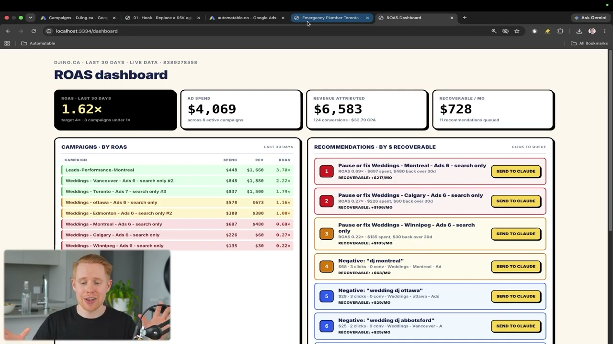
영상은 Claude Code를 Google Ads 자동화의 “마스터클래스” 도구로 소개하며 시작한다. 발표자는 Google Ads 계정 전체를 자동화하면 수백 시간, 많게는 수천 시간을 아낄 수 있다고 말한다. 여기서 자동화 대상은 광고 문구 몇 줄이 아니라 Google Ads 운영 전 과정이다. 키워드를 고르고, 캠페인을 만들고, 광고 그룹을 구성하고, 광고 자산을 생성하고, 랜딩페이지를 만들고, 계정을 감사하고, 개선 전략까지 도출하는 것이 목표다.
발표자는 자신의 이전 사업 Google Ads 계정을 근거로 든다. 그는 광고비 약 177,000달러를 지출했고, 약 20% 전환율을 기록했으며, 이 정도면 마케터 상위 1% 수준이라고 표현한다. Google Ads로 발생한 매출은 추적을 시작한 뒤에만 730,000달러 이상이며, 실제 시작 초기 1~2년은 추적하지 않았기 때문에 전체 성과는 더 클 수 있다고 말한다. 이 모든 경험을 기반으로 7년치 실전 지식을 한 영상에 압축하겠다고 선언한다.
스크린샷에는 ROAS dashboard가 표시되어 있다. 상단 카드에는 ROAS 1.62x, Ad Spend $4,069, Revenue Attributed $6,583, Recoverable / Mo $728 같은 수치가 보인다. 왼쪽 표는 캠페인별 ROAS를 초록, 노랑, 빨강으로 구분하고, 오른쪽에는 Send to Claude 버튼이 붙은 추천 목록이 있다. 영상의 핵심 메시지, 즉 “광고 운영은 수익 숫자와 개선 액션으로 연결되어야 한다”는 점을 시각적으로 보여주는 화면이다.
발표자는 본인의 기업가 초기 경험도 이야기한다. 그는 처음 사업을 시작했을 때 여러 마케팅 전략이 거의 작동하지 않았고, 은행 잔고 10,000달러가 9,000, 8,000, 7,000달러로 줄다가 임대료를 내고 4,000, 3,000달러까지 내려가면서 불안해졌다고 한다. 남은 생존 기간이 2주 정도라고 느끼던 상황에서 Google Ads를 통해 10명의 고객을 확보했고, 그 앱 또는 사업을 7자리 매출 규모로 키운 뒤 전년도에 매각했다고 설명한다. 이 배경은 단순 튜토리얼이 아니라 생존형 광고 시스템이었다는 서사를 만든다.
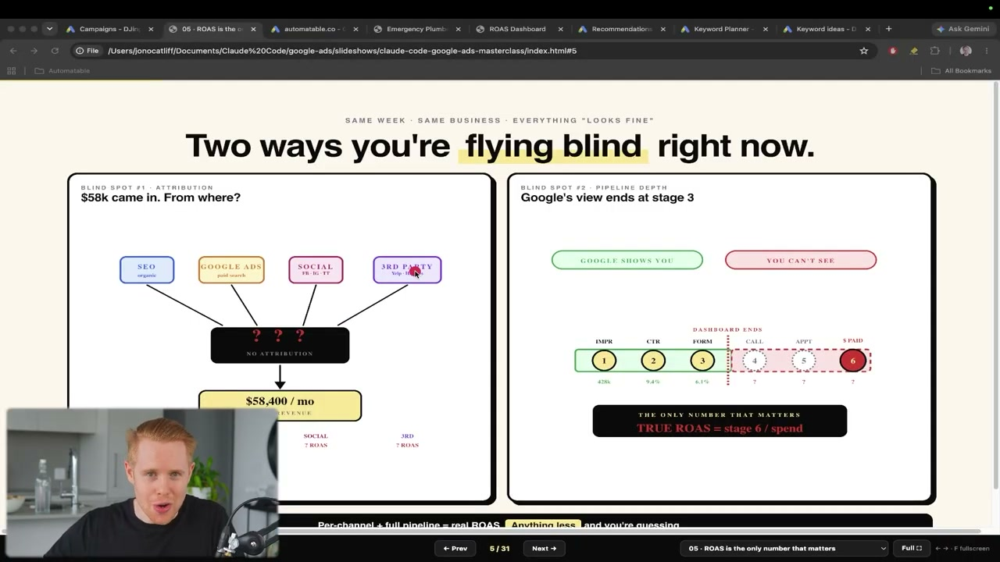
발표자는 Google Ads에서 가장 먼저 버려야 할 태도가 “Google이 시키는 대로 다 하는 것”이라고 말한다. Google Ads 추천 탭의 optimization score는 좋아 보이지만, 실제 목적은 광고주의 이익이 아니라 플랫폼 내 지출 증가일 수 있다고 경고한다. 계정 매니저의 주간 전화 역시 더 나은 결과보다 더 많은 지출에 인센티브가 묶여 있을 수 있다고 본다. 따라서 추천 점수와 상담원의 말은 참고하되 그대로 따르는 대상은 아니다.
또한 클릭 수, CTR, 전환율 같은 표면 지표는 최종 목표가 아니라고 강조한다. 클릭이 많아도 돈을 벌지 못하면 실패이며, 전환이 많아도 스팸 리드나 저품질 리드라면 의미가 없다. 실제로 중요한 것은 광고를 계속 돌릴 가치가 있는지, 즉 최종 이익과 ROAS다. 발표자는 이 영상 전체가 “돈을 더 많이 버는 방향으로 Google Ads를 최적화하는 법”에 묶여 있다고 말한다.
스크린샷에는 Two ways you're flying blind right now라는 큰 제목이 있고, 왼쪽에는 SEO, Google Ads, Social, 3rd Party에서 들어온 월 $58k 매출이 어디서 왔는지 알 수 없는 구조가 그려져 있다. 오른쪽에는 Google이 보여주는 단계가 Impr, CTR, Form 정도에서 끝나고, 실제로 중요한 Call, Appt, $ Paid는 보이지 않는다는 그림이 있다. 아래에는 TRUE ROAS = stage 6 / spend가 표시되어, 진짜 ROAS는 최종 결제 단계까지 봐야 계산된다는 메시지를 전달한다.
이 예시는 월 58,000달러 매출을 내는 사업자가 여러 유입 채널을 동시에 쓰는 상황을 가정한다. Google Ads에서 리드가 많아 보이더라도 그 리드가 실제 구매자인지, SEO에서 온 것인지, 소셜미디어에서 온 것인지, 제3자 리드 사이트에서 온 것인지 모르면 잘못된 판단을 하게 된다. 그래서 추적 시스템을 만들어 돈을 낸 고객이 어디서 왔는지 정확히 알아야 한다. 작동하는 채널에는 더 투자하고, 작동하지 않는 채널은 잘라내기 위해서다.
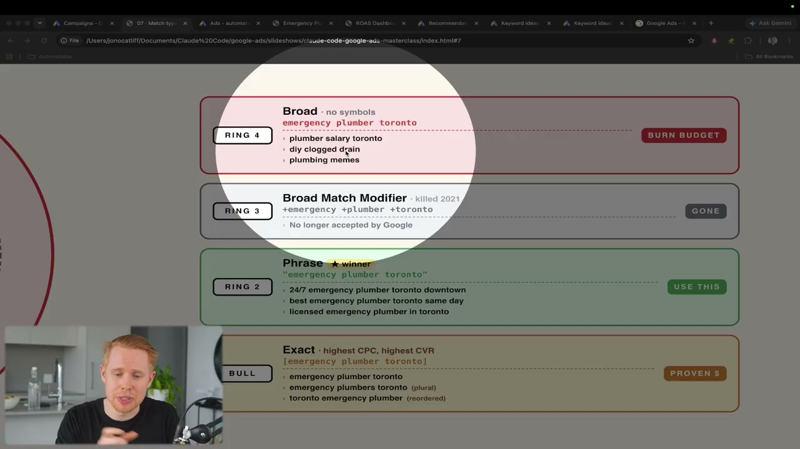
키워드 장에서는 “올바른 키워드를 고르지 못하면 Google Ads에서 이길 수 없다”는 전제로 시작한다. 발표자는 AI에게 좋은 키워드를 물어보면 그럴듯하지만 실제 검색량이 없거나 구매 의도가 없는 키워드를 받을 수 있다고 말한다. 특히 서비스업에서는 검색어가 고객 의도를 거의 그대로 드러내므로, 키워드 선택은 광고 성과의 기초가 된다. 잘못된 키워드를 잡으면 클릭 비용은 발생하지만 고객은 오지 않는다.
배관업체 예시가 반복된다. 누군가 Google에 plumbing을 검색한다고 해서 반드시 배관 서비스를 찾는 것은 아니다. plumbing supply near me는 장비나 부품을 사려는 사람이고, plumbing apprenticeship는 직업을 찾는 사람이며, plumbing course는 교육을 찾는 사람이다. plumbing supply는 장비, plumbing snake는 특정 도구 또는 경쟁성 검색어일 수 있으므로 실제 서비스 고객이 아닐 가능성이 높다.
스크린샷의 과녁형 슬라이드는 match type을 직관적으로 보여준다. Broad는 emergency plumber toronto를 입력해도 plumber salary toronto, diy clogged drain, plumbing memes 같은 검색까지 끌고 와 예산을 태울 수 있는 것으로 표시된다. Broad Match Modifier는 2021년에 사라진 방식으로 표시되고, Phrase는 별표와 함께 winner로 강조된다. Exact는 가장 중심에 가깝지만 검색량이 제한될 수 있고 CPC/CVR이 높게 표시된다.
발표자는 broad match를 일반적으로 피하라고 한다. Google 머신러닝이 의미상 유사하다고 판단한 검색어를 확장하기 때문에, emergency plumber Toronto를 노리는데 배관공 연봉, DIY 막힌 배수구, 배관 밈 같은 검색까지 포함될 수 있다고 예시를 든다. 그는 과장된 예시라고 인정하지만, 핵심은 돈이 되지 않는 검색어에 예산이 새는 문제다. Phrase match는 검색어 안에 핵심 문구가 포함되어야 하므로 다양한 표현을 포착하면서도 의도를 유지하는 절충안이다.
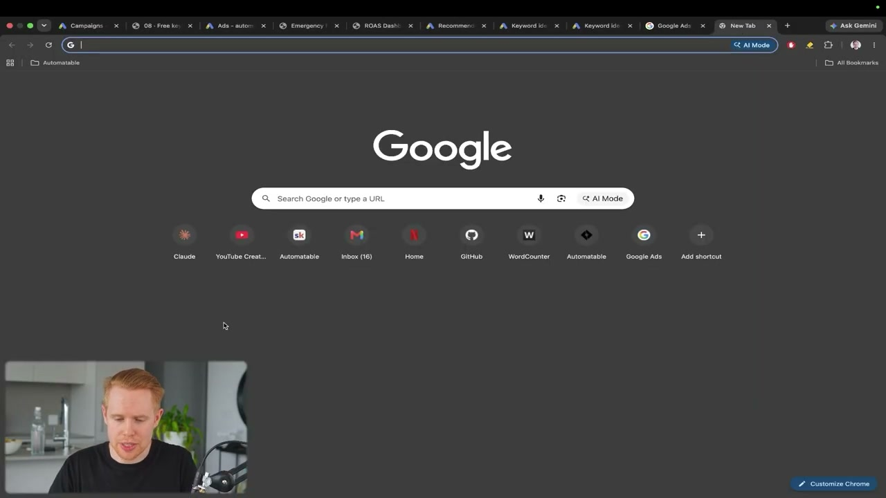
발표자는 Google Keyword Planner를 무료로 사용할 수 있다고 설명한다. 이를 위해 무료 Google Ads 계정을 만들고, Tools 메뉴에서 Keyword Planner로 들어가 Discover new keywords를 선택한다. 처음에는 넓게 시작해서 예를 들어 plumbing 같은 큰 단어를 넣는다. 그러나 기본값은 국가 전체를 대상으로 할 수 있으므로 반드시 실제 서비스 지역으로 좁혀야 한다.
지역 필터링은 매우 중요하다. 캘리포니아에서만 서비스하는 업체가 전국 클릭 비용을 내는 것은 낭비다. 영상에서는 캐나다 Toronto를 예시로 삼아 검색 결과를 확인한다. 결과에는 699개 키워드가 있고, 각 키워드의 평균 월 검색량, 경쟁도, 입찰 비용 정보를 볼 수 있다고 설명한다.
화면 자체는 Chrome의 새 탭과 Google 검색창이 보이며, 여러 탭에 Google Ads, Keyword Planner, Automatable 등이 열려 있다. 이는 발표자가 실제 브라우저에서 Google 검색과 Google Ads 도구를 오가며 워크플로를 진행한다는 점을 보여준다. 단순 슬라이드 강의가 아니라, 브라우저와 광고 계정, Claude Code를 계속 이동하는 작업형 튜토리얼이다.
좋은 키워드 예시로는 plumbers near me, emergency plumber near me가 나온다. near me는 즉시 고용 의도가 강하고, emergency는 지금 당장 문제를 해결해야 한다는 신호다. 반면 roto-rooter near me처럼 경쟁사명으로 보이는 키워드는 조심해야 한다. 이미 특정 회사를 찾는 사람은 광고를 클릭해도 “다른 회사에 연락하려던 것”이라고 말할 가능성이 있기 때문이다.
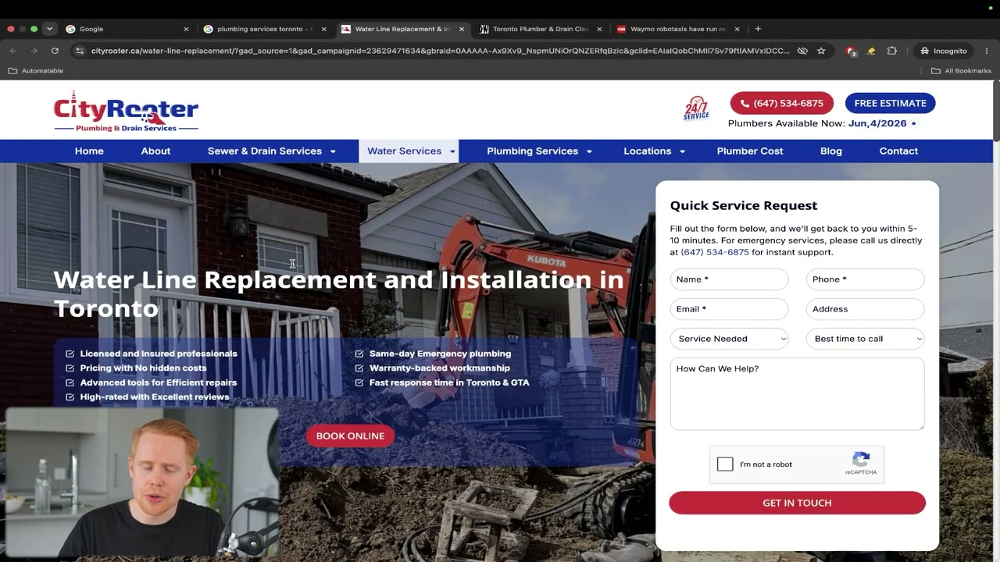
발표자는 고품질 키워드 패턴을 정리한다. 일반적으로 emergency + service, service near me, service in city, 24/7 service 같은 조합이 강력하다. 여기에 도시와 서비스를 매트릭스로 조합하는 방식도 추천한다. 예를 들어 emergency plumbing을 Toronto, Mississauga, Brampton, North York, Scarborough, Markham 등 각 지방자치단체와 조합할 수 있다.
다만 모든 조합이 좋은 것은 아니다. 큰 도시에서는 검색량이 충분할 수 있지만, 작은 교외 지역에서는 검색량이 너무 낮아 광고를 만들 가치가 떨어질 수 있다. 예를 들어 emergency plumbing in Toronto는 조회수가 충분할 수 있지만, emergency plumbing in Markham은 충분하지 않을 수 있다. 따라서 서비스와 도시를 무작정 곱하지 말고 Keyword Planner의 검색량과 비용 데이터를 보고 판단해야 한다.
이후 발표자는 자신의 70만 달러 이상 전략으로 SKAG를 소개한다. 핵심은 사용자의 검색어가 광고 문구와 일치하고, 그 광고가 랜딩페이지와 일치해야 한다는 것이다. 사용자가 plumber services Toronto를 검색했는데 광고가 galvanized pipe replacement를 보여주면 고객은 자신의 문제와 관계없다고 느낀다. 반면 광고가 plumber Toronto, 이상적으로는 plumber services Toronto를 말하면 검색 의도와 맞는다.
스크린샷에는 CityRooter의 실제 배관 랜딩페이지가 보인다. 헤드라인은 Water Line Replacement and Installation in Toronto이고, 우측에는 Quick Service Request 폼이 있다. 상단에는 전화번호, FREE ESTIMATE, 24/7 SERVICE, 내비게이션 메뉴가 보이고, 본문에는 “licensed and insured”, “pricing with no hidden costs”, “same-day emergency plumbing” 같은 신뢰 요소가 배치되어 있다. 이 화면은 발표자가 말하는 “검색어와 랜딩페이지 메시지의 일치”가 실제 페이지에서 어떻게 보이는지 보여준다.
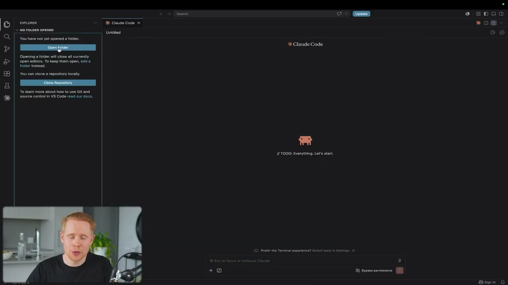
발표자는 Claude Code와 Google Ads를 연결하기 위한 준비물로 무료 커뮤니티의 두 파일을 언급한다. 하나는 setup guide이고, 다른 하나는 prompt guide다. setup guide는 Google Ads와 Claude Code 연결 과정을 클릭 단위로 안내하고, prompt guide는 영상에서 쓰는 프롬프트를 그대로 복사할 수 있게 한다. 사용자는 이를 VS Code 안에 넣고 Claude Code에게 읽히면 된다.
VS Code는 코딩 소프트웨어 또는 작업 공간으로 설명된다. 발표자는 “code”라는 단어가 무섭게 들릴 수 있지만 기술자가 아니어도 된다고 말한다. Claude Code는 VS Code 안에 설치하는 확장 프로그램처럼 동작하며, 사용자는 사장이고 Claude는 고용한 시니어 개발자처럼 지시를 수행한다고 비유한다. 즉 사용자는 프로그래밍 지식보다 명확한 지시와 검토 역할을 맡는다.
스크린샷에는 VS Code가 열려 있고 왼쪽 Explorer에는 NO FOLDER OPENED, Open Folder, Clone Repository 버튼이 보인다. 중앙에는 Claude Code 패널이 열려 있으며, 하단에는 입력창과 Bypass permissions 토글이 보인다. 아직 폴더가 열리지 않은 초기 상태라, 발표자가 “모든 프로젝트는 폴더 안에 있어야 한다”고 설명하는 맥락과 맞다.
발표자는 Google Ads 프로젝트를 담을 빈 폴더를 만들고, 그 안에 prompts와 setup 파일을 추가한다. 이후 첫 프롬프트로 setup 파일을 읽고 Google Ads 계정에 연결해 달라고 요청한다. Claude는 설정 가이드를 읽고 필요한 파일과 단계를 생성한다. 이후의 모든 자동화는 이 작업 폴더를 기준으로 이뤄진다.
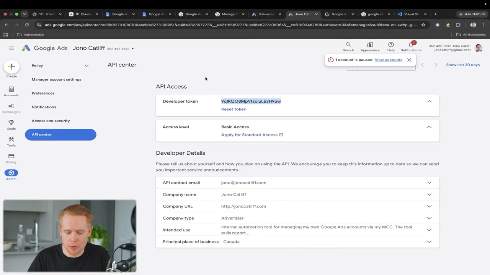
Google Ads API 연결의 첫 단계는 일반 Google Ads 계정과 별도로 Manager Account를 만드는 것이다. 발표자는 Google에서 Google Ads manager account를 검색해 첫 링크로 들어가 무료로 만들 수 있다고 설명한다. Manager Account 안에서 Accounts, Sub-accounts로 이동해 기존 Google Ads 계정을 연결한다. 기존 계정의 ID를 붙여 넣고 요청을 보내면 이메일 승인 절차를 거쳐 연결이 완료된다.
이후 Admin 메뉴의 API Center로 들어가 developer token을 확인한다. 스크린샷에는 Google Ads API center 화면이 보이며, API Access, Developer token, Access level Basic Access, Apply for Standard Access가 표시되어 있다. Basic Access는 하루 2,880개 요청을 제공한다고 설명된다. 더 많은 요청이 필요하면 Standard 또는 Basic access 확장 신청을 해야 하며, Google 승인에는 약 72시간이 걸릴 수 있다고 말한다.
화면 하단에는 Developer Details가 보이고, API contact email, Company name, Company URL, Company type, Intended use, Principal place of business 같은 항목이 있다. 이는 Google이 API 사용 목적을 검토한다는 점을 보여준다. 발표자는 developer token을 .env의 developer token 위치에 넣으라고 설명한다. .env는 비밀번호와 secret key를 저장하는 파일로 소개된다.
중요한 점은 이 API 설정이 단발 작업이라는 것이다. 처음에는 복잡하지만 한 번 해두면 다시 반복할 필요가 없다. 이후 Claude Code가 Google Ads 계정의 캠페인, 광고, 키워드, 리포트 데이터를 다루는 기반이 된다.
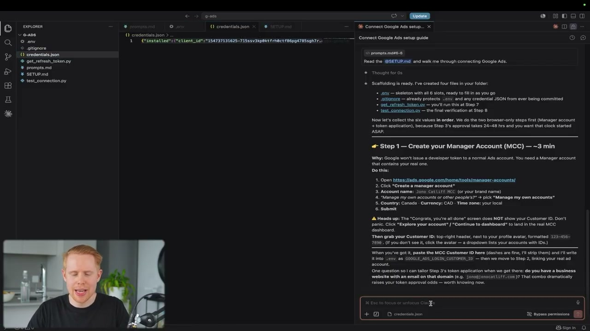
두 번째 큰 설정 축은 Google Cloud Console이다. 발표자는 새 프로젝트를 만들고 이름을 Google ads처럼 정한 뒤, billing account를 연결하고 parent resource는 기본값으로 두면 된다고 설명한다. 프로젝트가 생성되면 해당 프로젝트로 전환하고 상단 검색에서 Google Ads API를 찾아 활성화한다. 이 API 활성화가 Claude Code와 Google Ads 사이의 기술적 연결을 가능하게 한다.
그 다음 API & Services 메뉴에서 OAuth consent screen을 만든다. 앱 이름은 cloud code처럼 원하는 이름을 넣고, support email을 선택한다. 앱 유형은 external로 설정하고, 같은 이메일을 다시 입력한 뒤 Google의 약관에 동의해 생성한다. 이후 Audiences에서 test user를 추가해야 하며, 이때 실제 로그인에 사용할 이메일과 정확히 같은 이메일을 넣어야 한다.
마지막으로 Credentials 메뉴에서 OAuth client ID를 만든다. 애플리케이션 유형은 desktop application으로 선택하고, 이름은 cloud code 등으로 지정한다. 생성 후 JSON 파일을 다운로드해 credentials.json으로 이름을 바꾸고 Claude Code 프로젝트 폴더에 넣는다. Claude에게 이 파일을 읽고 Google 인증을 진행하라고 요청하면 브라우저 로그인 플로우가 열린다.
스크린샷에는 VS Code 프로젝트가 보이고, 왼쪽 파일 트리에 .env, .gitignore, credentials.json, get_refresh_token.py, prompts.md, SETUP.md, test_connection.py가 있다. 오른쪽 Claude Code 패널에는 Connect Google Ads setup guide, Step 1 - Create your Manager Account (MCC)와 같은 체크리스트가 보인다. Claude가 단순히 설명만 하는 것이 아니라 폴더 구조와 스크립트, 설정 파일을 실제로 구성하는 흐름이다.
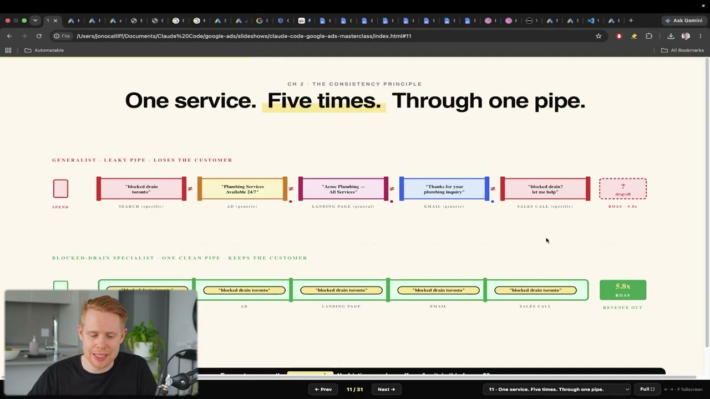
Google Ads에는 세 가지 레벨이 있다. 가장 위에는 campaign, 그 아래 ad group, 그 아래 ads가 있다. 발표자는 이를 Google Drive의 중첩 폴더처럼 설명한다. 각 폴더는 설정을 갖고, 하위 폴더와 파일을 담는 구조라고 보면 된다.
캠페인 레벨은 보통 특정 서비스 단위로 잡는다. 예를 들어 emergency plumbing 캠페인, 다른 배관 서비스 캠페인을 만들 수 있다. 캠페인에서는 하루 예산, 광고가 실행될 요일과 시간, 타깃 위치, 네트워크, 입찰 전략 등을 정한다. 즉 “어디서, 언제, 얼마를 쓰고, 어떤 큰 서비스 묶음으로 운영할지”가 캠페인의 역할이다.
Ad group은 SKAG 원칙에 따라 하나의 검색어 또는 매우 좁은 검색어를 담당한다. 예를 들어 emergency plumbing Mississauga ad group, emergency plumbing Toronto ad group을 따로 둔다. 이렇게 하면 한 검색어에 맞춘 광고가 만들어지고, 그 광고는 다시 그 검색어에 맞춘 랜딩페이지로 이어진다. 발표자는 이 구조가 더 많은 돈을 벌 가능성이 높다고 말한다.
스크린샷의 슬라이드는 One service. Five times. Through one pipe.라는 문장으로 일관성 원칙을 설명한다. 위쪽 나쁜 예시는 blocked drain 검색이 Plumbing Services Available 24/7, Acme Plumbing - All Services, Thanks for your plumbing inquiry, Blocked drain? Let me help처럼 서로 어긋나는 파이프를 통과한다. 아래 좋은 예시는 blocked drain toronto가 광고, 랜딩페이지, 이메일, 세일즈 콜까지 동일하게 이어지고, ROAS가 5.8x로 표시된다. 즉 메시지 일관성이 고객 이탈을 줄인다는 시각적 설명이다.
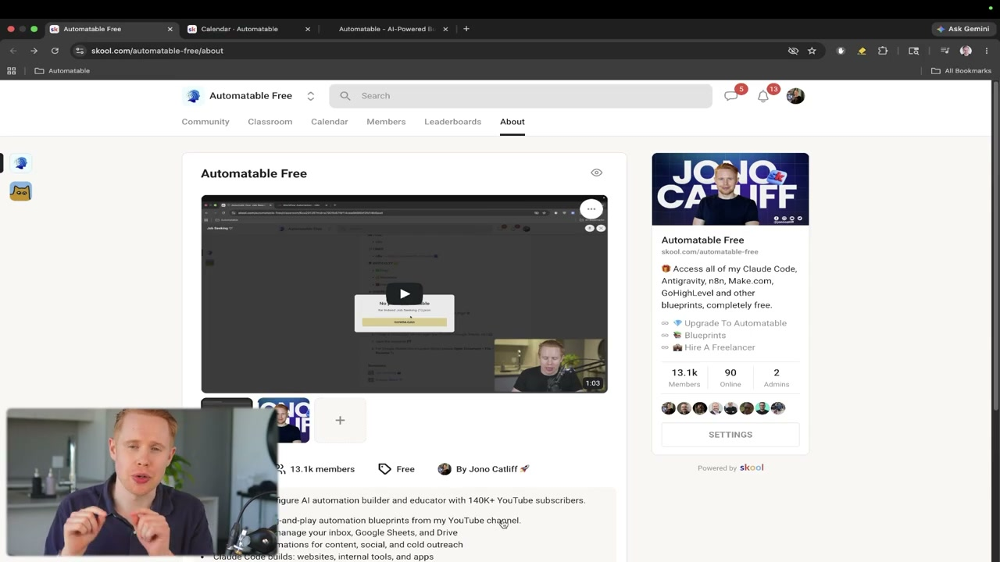
발표자는 영상 중간에 무료 Skool 커뮤니티를 반복적으로 소개한다. 여기에는 Google ads campaign setup 같은 blueprint가 있고, 이를 Google Doc에서 복사해 Claude Code 프로젝트에 campaigns.md 파일로 붙여 넣는다. 그 안에는 Python 스크립트와 설정 지침이 포함되어 있지만, 사용자는 코드를 이해할 필요가 없다고 말한다. 발표자는 code 폴더를 만들어 스크립트를 정리해두면 신경 쓰지 않아도 된다고 설명한다.
프롬프트는 campaigns.md 파일을 읽고 첫 Google Ads 캠페인을 만들어 달라는 형태다. 이때 사용자의 도메인을 입력해야 한다. 이유는 Claude Code가 해당 회사 웹사이트를 조사하고, 그 정보를 캠페인과 광고 문구에 반영하도록 설계되어 있기 때문이다. 즉 광고가 일반적인 템플릿이 아니라 실제 비즈니스와 연결되도록 한다.
스크린샷에는 Automatable Free Skool 커뮤니티가 보인다. 오른쪽 카드에는 “Access all of my Claude Code, Antigravity, n8n, Make.com, GoHighLevel and other blueprints, completely free”라는 설명이 있고, 13.1k members, Free, By Jono Catliff가 표시된다. 이는 영상의 실습 자료가 커뮤니티 기반으로 제공된다는 점을 보여준다.
중간 광고성 설명도 포함된다. 발표자는 무료 블루프린트 외에 유료 커뮤니티가 있으며, 두 가지 transformation을 제공한다고 말한다. 하나는 무경험자가 30일 안에 첫 에이전시/프리랜스 계약을 찾고, 닫고, 이행하는 방법이다. 다른 하나는 기존 사업자가 Claude Code 블루프린트로 업무의 최대 80%를 자동화하는 방법이다.
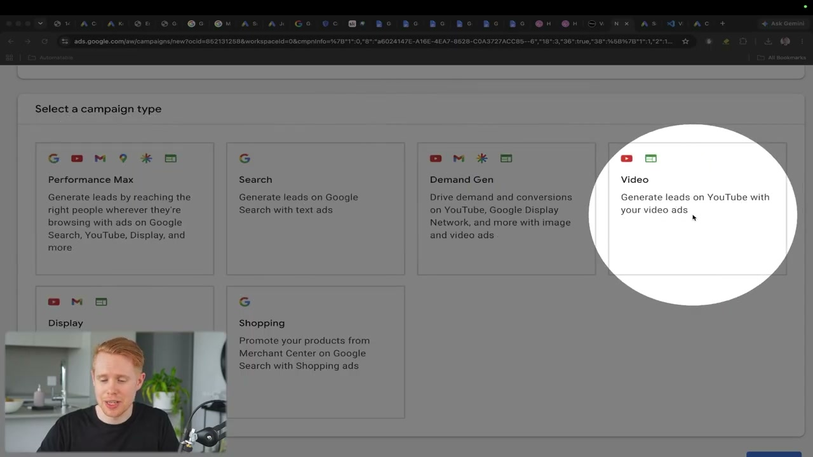
Claude Code가 첫 캠페인을 만든 뒤 발표자는 설정을 검토한다. 먼저 캠페인 유형은 Search로 만들었다고 설명한다. Google Ads에는 Performance Max, Search, Demand Gen, Video, Shopping, Display 등이 있다. 발표자는 서비스 기반 소규모 사업에서는 Search가 가장 의도 높은 트래픽이라고 본다.
그는 garage sale 비유를 사용한다. 중고품 시장에 갔을 때 10번 중 1번 정말 좋은 물건을 찾는 것이 search traffic이고, 나머지 쓸모없는 물건들이 Performance Max, Display, Demand Gen, Video에 가깝다고 표현한다. Shopping은 이커머스에는 유용할 수 있지만, 서비스업에서는 검색 광고가 더 적합하다는 입장이다. 그는 다른 네트워크로 성공한 사람도 있겠지만 본인은 큰 성공을 거두지 못했다고 말한다.
스크린샷에는 Google Ads의 Select a campaign type 화면이 보인다. 카드에는 Performance Max, Search, Demand Gen, Video, Display, Shopping이 있고, Video 카드에는 “Generate leads on YouTube with your video ads”라는 설명이 있다. 발표자는 이런 옵션을 모두 보여주며 Search 외의 네트워크가 멋져 보일 수 있지만, 실제 구매 의도가 낮을 수 있다고 경계한다.
Display Network에 대해서도 부정적이다. 그는 웹사이트 곳곳에 표시되는 배너 광고를 자신이 클릭한 경우는 거의 실수였고, 클릭하자마자 나갔다고 말한다. Gmail, YouTube, Maps 등의 광고도 자신은 잘 클릭하지 않는다고 설명한다. 따라서 낮은 의도의 노출과 실수 클릭에 돈을 내고 싶지 않다는 결론을 낸다.
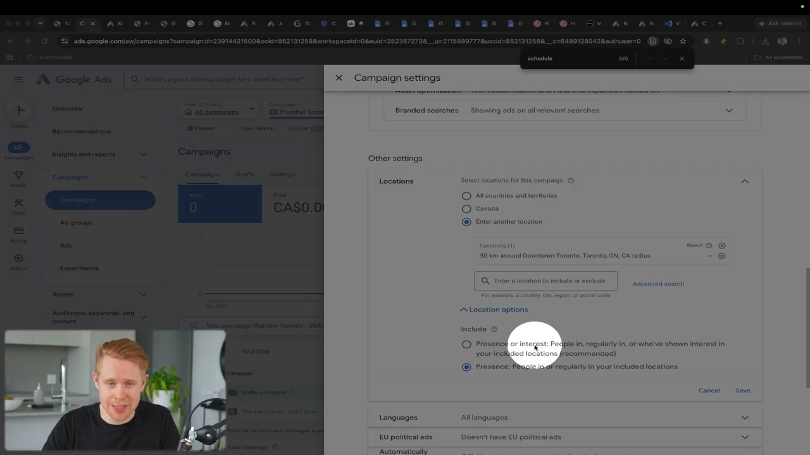
캠페인 설정에서 스케줄은 광고를 언제 운영할지 결정한다. 24시간 돌릴 수도 있고 영업시간에만 돌릴 수도 있다. 밤 시간 광고는 대체로 저렴하지만, 새벽 2시에 리드를 받으면 바로 전화하기 어렵고 다음날 연락하면 응답률이 낮아지는 문제가 있다. 따라서 광고 단가와 리드 대응 가능성을 함께 고려해야 한다.
위치 설정은 매우 중요하다. 이동형 서비스업이라면 도시 중심에서 50km 정도 반경을 설정해 교외까지 포함할 수 있다. 하지만 이발소처럼 고객이 매장으로 오는 사업이라면 50km는 너무 넓다. 사업 모델에 따라 지역 반경은 달라져야 한다.
스크린샷에는 Campaign settings의 Locations 설정이 보인다. 위치는 50 km around Downtown Toronto, Toronto, ON, CA radius로 설정되어 있고, Location options에서 Presence: People in or regularly in your included locations가 선택되어 있다. 발표자는 기본값인 Presence or interest를 쓰면 인도, 중국, 아프리카, 남미, 호주 등에서 Toronto에 관심 있는 사람에게도 광고가 보일 수 있다고 경고한다. 이는 Google이 광고비를 더 쓰게 만드는 숨은 함정이라고 본다.
제외 위치도 중요하다. 발표자는 타깃 국가를 제외한 주요 국가를 캠페인에서 제외해 VPN 클릭, 봇 클릭, 해외 클릭을 줄였다고 말한다. Claude Code가 전 세계 대부분을 제외 위치로 추가해줄 수 있고, 빠진 국가가 있으면 다시 Claude에게 추가하도록 요청하면 된다. 디바이스는 태블릿, 모바일, 데스크톱을 모두 포함하고, audience segments는 검색 광고에서는 보통 끈다고 한다. 검색어가 강한 의도라면 인구통계나 관심사로 좁히기보다 구매 의도가 있는 모든 사람을 잡는 것이 낫다는 판단이다.
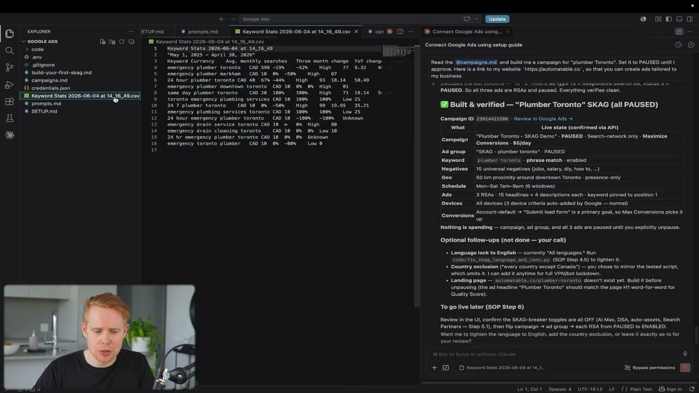
스크린샷에는 VS Code와 Claude Code가 함께 보인다. 왼쪽에는 GOOGLE ADS 폴더와 code, .env, campaigns.md, credentials.json, Keyword Stats 2026-06-04...csv 등이 보인다. 중앙 CSV에는 키워드 통계가 들어 있으며 emergency plumber toronto, 24 hour plumber toronto, emergency plumber downtown toronto, same day plumber toronto 같은 검색어와 평균 월 검색량, 경쟁도, 입찰 범위가 표시되어 있다. 오른쪽 Claude Code 패널은 Built & verified -- "Plumber Toronto" SKAG (all PAUSED)라고 보고한다.
보고 내용에는 캠페인 Plumber Toronto - SKAG Demo, 캠페인 ID, Search-network only, Maximize Conversions, 하루 $5 예산, ad group SKAG - plumber toronto, keyword plumber toronto phrase match, negatives 15개, geo 50km around downtown Toronto, schedule Mon-Sat 7am-9pm, ads 3 RSAs, 각 광고 15 headlines와 4 descriptions 등이 포함된다. 또한 모든 campaign, ad group, ads는 사용자가 명시적으로 unpause하기 전까지 paused 상태라고 되어 있다. 이는 자동화가 실수로 광고비를 바로 쓰지 않도록 안전하게 운영된다는 점을 보여준다.
발표자는 초기에 만든 키워드 CSV를 Claude Code에 넣고, 이를 기반으로 캠페인과 광고 그룹을 체계적으로 만들 수 있다고 말한다. 수동으로 하면 캠페인, 광고 그룹, 광고, 랜딩페이지, 분석 설정을 만드는 데 몇 주에서 몇 달이 걸릴 수 있다. Claude Code는 이 작업을 매우 빠르게 처리한다. Google Ads 배경이 없는 1인 사업자도 대량 작업을 수행할 수 있다는 것이 발표자의 주장이다.
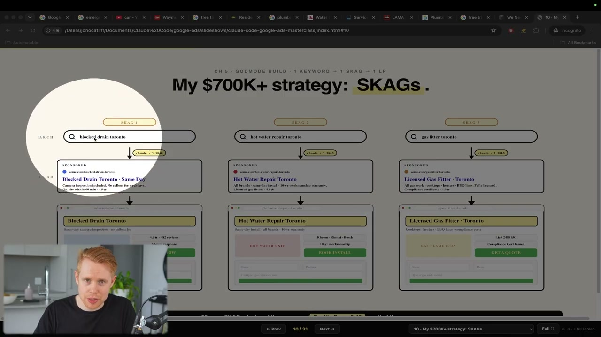
Google Ads는 기본적으로 클릭당 비용을 내는 경매 시스템이다. 경쟁자들과 입찰 경쟁을 하고, 일반적으로 더 많이 입찰할수록 상단에 노출된다. 발표자는 Plumbing Services Toronto 검색 결과에서 위쪽 광고가 아래쪽 광고보다 보통 더 비쌀 것이라고 설명한다. 실제로는 품질 점수 등 더 많은 요소가 있지만, 기본 원리는 경매다.
시작 입찰 전략은 Maximize Conversions를 추천한다. 광고 클릭 자체는 돈을 만들지 않기 때문이다. 웹사이트 방문은 좋지만, 방문자가 폼을 제출해 리드가 되지 않으면 사업 수익으로 이어지지 않는다. 그러나 장기적으로는 폼 전환도 최종 목표가 아니며, 실제 결제 고객과 ROAS로 최적화해야 한다.
스크린샷에는 My $700K+ strategy: SKAGs라는 슬라이드가 보인다. 세 개의 열이 있고 각각 blocked drain toronto, hot water repair toronto, gas fitter toronto 검색어가 광고와 랜딩페이지로 이어진다. 각 검색어 아래에는 해당 검색어에 정확히 맞춘 sponsored ad와 전용 랜딩페이지가 표시된다. 이는 하나의 키워드가 하나의 광고와 하나의 랜딩페이지로 연결되는 구조를 시각화한다.
발표자는 클릭 비용을 낮추는 세 가지 요인을 말한다. 첫째, Smart Bidding이 새 계정과 타깃 고객을 학습하는 시간이 필요하다. 둘째, 나쁜 검색어에 노출되지 않아야 하며 SKAG 구조가 이를 어느 정도 해결한다. 셋째, Google의 keyword quality score를 높여야 한다. 품질 점수는 expected CTR, ad relevance, landing page relevance로 구성되고, 점수가 높을수록 클릭 비용이 내려갈 수 있다.
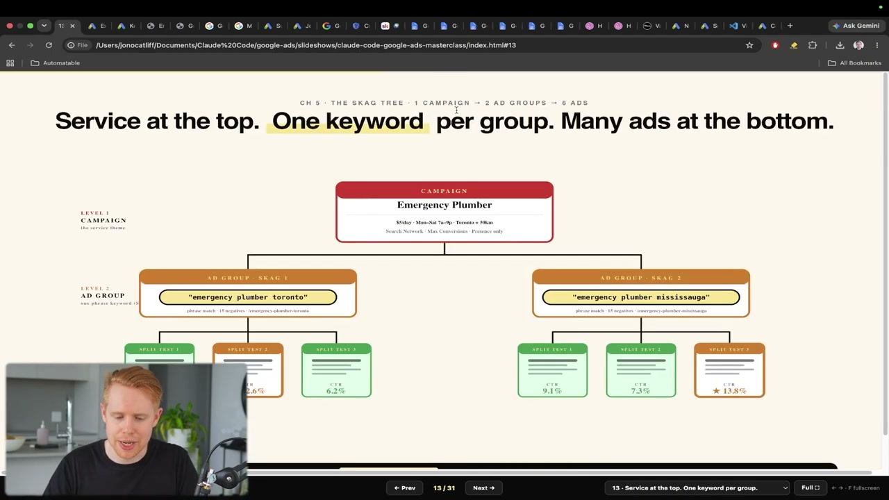
스크린샷은 Service at the top. One keyword per group. Many ads at the bottom.이라는 문장으로 구조를 요약한다. 맨 위 Level 1은 Campaign이고, 예시는 Emergency Plumber다. 그 아래 Level 2는 Ad Group이며, emergency plumber toronto, emergency plumber mississauga가 각각 하나의 ad group으로 나뉜다. 맨 아래에는 split test 1, 2, 3 형태의 여러 광고가 있고, CTR 수치가 비교된다.
이 구조는 영상 전체의 실무 템플릿이다. 캠페인은 서비스 테마, 광고 그룹은 하나의 phrase keyword, 광고는 여러 변형을 테스트하는 단위다. 발표자는 한 광고만 던지고 좋은 결과를 기대하는 방식은 위험하다고 본다. 광고는 수십 개, 가능하면 수백 개 변형을 테스트해야 진짜 outlier를 찾을 수 있다.
좋은 광고 하나는 오래 쓸 수 있다. 발표자는 가장 많은 돈을 벌어주는 winning ad를 찾으면 이상적으로 10년 동안 활용할 수 있다고 말한다. 이 말은 과장처럼 들릴 수 있지만, 핵심은 광고 실험의 목적이 일시적 개선이 아니라 장기적으로 수익을 만드는 메시지 조합을 찾는 데 있다는 것이다. Claude Code는 이 실험량을 사람이 수동으로 감당하기 어렵지 않게 만든다.
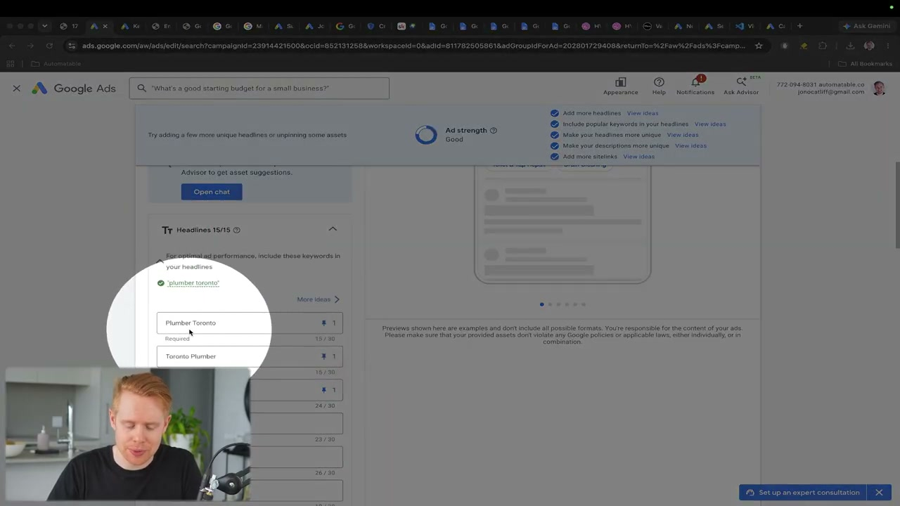
광고 생성 장에서 발표자는 예전에는 200개 광고를 만들려면 8시간, 길게는 16시간 집중 작업이 필요했다고 말한다. 좋은 광고를 만드는 것은 단순한 문장 생성이 아니라 글자 수 제한, 키워드 매핑, 혜택 표현, 정책 준수, 자산 확장까지 고려해야 하기 때문이다. Claude Code는 reference file을 읽고 이 구조를 자동화한다. 사용자는 무료 커뮤니티에서 anatomy of a good ad.md와 ad assets best practices.md 같은 블루프린트를 가져온다.
스크린샷에는 Google Ads의 반응형 검색광고 편집 화면이 보인다. 왼쪽에는 Headlines 15/15가 있고 plumber toronto 키워드가 포함되어야 한다는 힌트가 보인다. 특정 headline에는 pin 아이콘과 position 1이 표시되어 있어, 검색어 핵심 문구가 항상 첫 번째 위치에 고정되는 것을 보여준다. 오른쪽에는 Ad strength가 Good으로 표시되고, Google의 추천 항목도 보인다.
발표자는 Claude가 최종 URL destination, display URL, 15개 headline, description, sitelinks, structured snippets, callouts 등을 생성한다고 설명한다. 이미지 자산은 선택 사항이며, 좋은 이미지는 CTR을 올릴 수 있지만 저품질 stock image나 AI 느낌이 강한 이미지는 신뢰를 낮춰 CTR을 떨어뜨릴 수 있다고 말한다. business name과 logo도 Claude가 누락했으면 다시 지시해 다음부터 넣도록 개선할 수 있다. 즉 자동화는 한 번에 완벽하다기보다 반복 피드백으로 점점 정확해지는 작업이다.
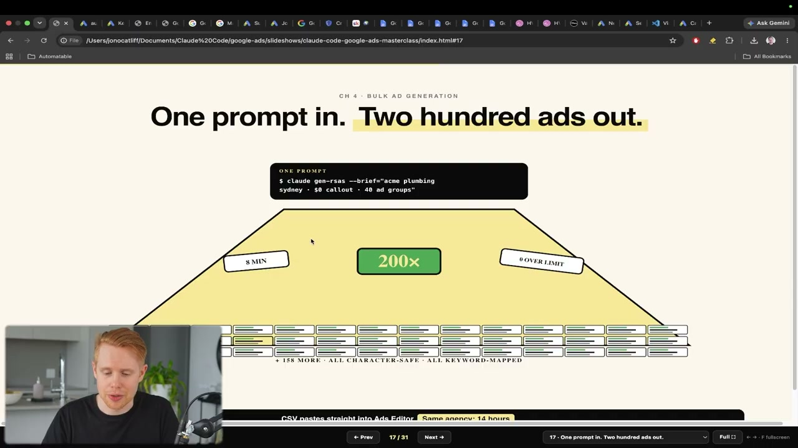
스크린샷에는 One prompt in. Two hundred ads out.이라는 강한 문구가 보인다. 가운데에는 $ claude gen-rsas --brief "acme plumbing sydney" --50 callout --40 ad groups처럼 보이는 명령형 예시가 있고, 아래에는 200x라는 큰 표시와 여러 광고 카드가 줄지어 있다. 하단에는 +158 more, all character-safe, all keyword-mapped 같은 메시지가 보인다. 이는 대량 광고 생성의 목표가 “많이 만들기”뿐 아니라 제한 글자 수와 키워드 매핑까지 맞추는 것임을 보여준다.
광고 자산에는 callouts, structured snippets, sitelinks가 포함된다. Callouts는 24/7 emergency service, no call-out fee, licensed and insured 같은 짧은 신뢰·혜택 문구다. Structured snippets는 제공 서비스 목록을 보여주는 자산이다. Sitelinks는 사용자를 웹사이트의 다른 페이지로 이동시키는 링크다.
발표자는 이 확장 자산들의 가장 큰 목적 중 하나를 “검색 결과 페이지에서 더 많은 디지털 부동산을 차지하는 것”이라고 말한다. 광고가 작게 보이면 사용자는 그냥 지나칠 수 있지만, callouts와 sitelinks로 더 큰 공간을 차지하면 클릭 가능성이 올라간다. 따라서 가능한 많은 광고 자산을 채우는 것이 유리하다. 만약 광고가 잘 보이지 않으면 ad blocker를 꺼야 한다는 실무 팁도 언급한다.
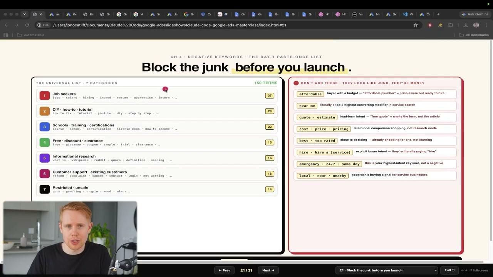
발표자는 headline pinning이 중요하다고 강조한다. Google은 머신러닝으로 어떤 headline 조합이 더 높은 CTR이나 전환을 만드는지 테스트하지만, 모든 headline을 완전히 자유롭게 돌리면 사용자가 무엇을 보고 있는지 명확하지 않을 수 있다. 검색어의 핵심 키워드는 headline position 1에 고정해야 한다. 예를 들어 Plumber Toronto를 검색한 사람에게 첫 번째 headline이 Upfront Pricing, Same Day Service, Free Quote in 2 Minutes처럼만 보이면 무엇을 제공하는 회사인지 헷갈릴 수 있다.
따라서 루트 키워드를 먼저 보여주고, 나머지 오퍼와 신뢰 문구는 회전 테스트하게 둔다. 발표자는 광고 3개만 테스트하는 것이 아니라 가능하다면 수백 개를 테스트하라고 권한다. Claude Code로 생성 비용이 낮아졌기 때문에 더 많은 실험을 돌릴 수 있다는 논리다. 그러나 테스트에는 충분한 검색량이 필요하다고 주의한다.
스크린샷은 부정 키워드 장의 슬라이드지만, 시각적으로 중요한 내용을 담고 있다. 제목은 Block the junk before you launch.이고, 왼쪽에는 universal list 7 categories, 총 150 terms가 보인다. 카테고리는 job seekers, DIY/how-to/tutorial, schools/training/certifications, free/discount/clearance, informational research, customer support/existing customers, restricted/unsafe로 나뉜다. 오른쪽에는 “제외하면 안 되는 단어”로 affordable, near me, quote/estimate, cost/price/pricing, best/top rated, hire, emergency/24/7/same day, local/near/nearby가 정리되어 있다.
이 화면은 부정 키워드 전략의 균형을 잘 보여준다. 겉으로 보기엔 cheap, near me, quote 같은 단어가 저품질처럼 보일 수 있지만, 실제로는 구매 의도가 강한 경우가 많다. 반대로 course, job, definition, how to는 클릭은 발생해도 고객이 될 가능성이 낮다. 부정 키워드는 넓게 막는 것이 아니라 의도별로 정확히 나누어야 한다.
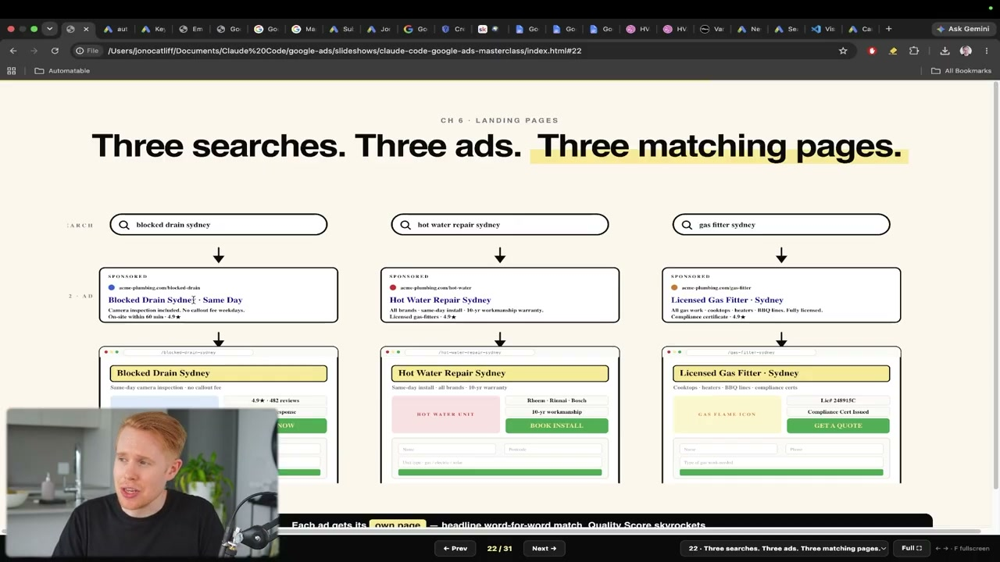
부정 키워드는 두 단계로 나뉜다. 첫째는 universal negative keyword list를 만드는 것이다. 이는 특정 캠페인 하나만이 아니라 모든 서비스업 캠페인에서 대체로 제외할 수 있는 공통 목록이다. 구직, DIY, 학교, 교육, 자격증, 무료 정보, 기존 고객 지원, 위험하거나 부적합한 검색어 등이 포함된다. 예를 들어 plumber school은 배관업체 고객이 아니라 배관공이 되려는 사람의 검색이다.
둘째는 실제 search terms report를 보고 추가로 제거하는 것이다. 아무리 SKAG와 phrase match를 잘 써도 예상 못한 검색어가 들어올 수 있다. 이때 돈을 쓰고도 고객이 되지 않는 검색어를 찾아 부정 키워드로 추가해야 한다. 발표자는 이 작업이 Google Ads 비용을 크게 줄일 수 있다고 본다.
스크린샷에는 Three searches. Three ads. Three matching pages.라는 슬라이드가 보인다. blocked drain sydney, hot water repair sydney, gas fitter sydney라는 세 검색어가 각각 광고와 랜딩페이지로 이어진다. 각 랜딩페이지 헤드라인은 Blocked Drain Sydney, Hot Water Repair Sydney, Licensed Gas Fitter Sydney처럼 검색어와 맞춰져 있다. 이는 부정 키워드 이후에도 결국 핵심은 “보여줄 검색어만 보여주고, 보여준 검색어에는 정확히 맞는 경험을 제공하는 것”임을 보여준다.
발표자는 universal negative keywords 파일을 universal negative keywords.md로 만들고 Claude Code에 읽게 한다. Claude는 이를 캠페인에 negative keyword list로 적용하고, 이 리스트를 여러 캠페인에 재사용할 수 있게 만든다. Google Ads의 negative keywords 화면에서 coupon, plumbing coupon, plumbing course, plumbing crypto, plumbing definition, plumbing do it yourself 같은 단어들이 보인다고 설명한다. 이런 검색어는 돈을 만들지 않으므로 처음부터 막는 것이 낫다.
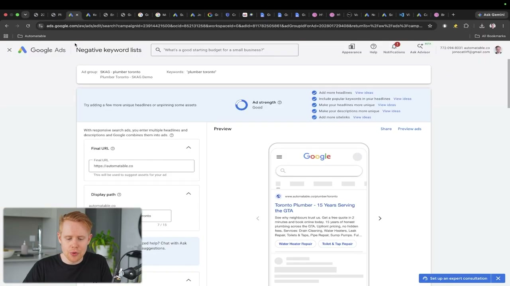
스크린샷에는 Google Ads 반응형 검색광고 편집 화면이 보인다. 왼쪽에는 Final URL이 https://automatable.co로 들어가 있고, display path에는 toronto가 보인다. 오른쪽 모바일 미리보기에는 Toronto Plumber - 15 Years Serving the GTA라는 광고 제목과 URL www.automatable.co/plumber/toronto가 표시된다. 설명에는 이웃 신뢰, 무료 견적, 빠른 배관 서비스, no hidden fees, services 목록 등이 보인다.
발표자는 이 시점의 final URL이 아직 placeholder라고 설명한다. 전용 랜딩페이지를 아직 만들기 전에는 홈페이지나 존재하는 페이지를 임시로 넣을 수 있다. 하지만 진짜 운영에서는 각 광고의 final URL이 해당 검색어에 맞춘 랜딩페이지로 바뀌어야 한다. 랜딩페이지를 deploy해서 live URL이 생긴 뒤 Google Ads final URL을 업데이트해야 한다.
이 화면은 Google Ads UI 안에서 광고가 실제 검색 결과처럼 어떻게 보일지 확인하는 단계다. 광고 문구는 모바일 화면에 제한된 공간으로 보이므로, headline과 description의 우선순위가 중요하다. 검색어를 첫 headline에 고정하고, 나머지 headline과 description은 혜택·증거·오퍼를 담는 방식이 합리적이다. Claude가 생성한 광고도 사람이 미리보기를 확인하고 business name, logo, URL, policy issue를 점검해야 한다.
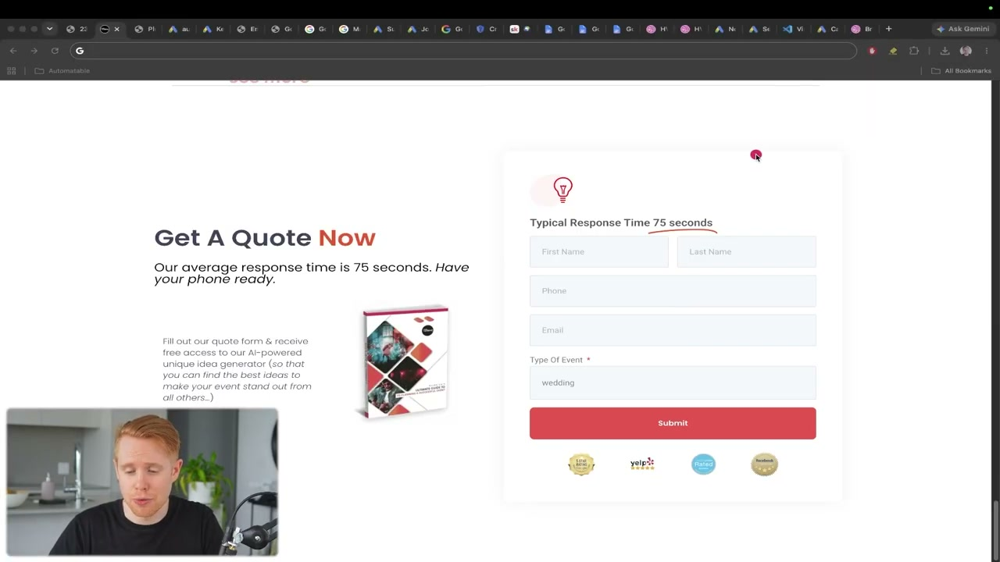
발표자는 광고 생성보다 랜딩페이지 생성이 더 고통스러웠다고 말한다. 수백 개 광고를 테스트하려면 그에 맞는 랜딩페이지도 만들어야 하고, 수작업으로 하면 한 달이 걸릴 수 있다고 표현한다. Claude Code를 쓰면 이 과정을 몇 분 단위로 줄일 수 있다고 주장한다. Next.js 프로젝트를 만들고, 검색어와 일치하는 headline을 가진 페이지를 생성한다.
스크린샷에는 Get A Quote Now 섹션과 견적 폼이 보인다. 왼쪽에는 평균 응답 시간이 75초라는 문구와 이벤트 아이디어 생성기 이미지를 배치했고, 오른쪽에는 Typical Response Time 75 seconds가 강조된 폼이 있다. 입력 필드는 First Name, Last Name, Phone, Email, Type Of Event이고, Type Of Event에는 wedding이 들어가 있다. 아래에는 Yelp 등 신뢰 배지처럼 보이는 아이콘들이 배치되어 있다.
발표자는 랜딩페이지에서 가장 중요한 요소로 split testing을 꼽는다. 자신의 직감, 친구의 의견, 전문가의 주장보다 실제 A/B test 데이터가 무엇이 전환되는지 알려준다는 것이다. 두 번째로 video testimonials를 강하게 추천한다. 고전환 랜딩페이지의 핵심은 사회적 증거이고, 미래 성과의 가장 좋은 지표는 과거 성과이며, 과거 성과를 보여주는 가장 좋은 방식이 social proof라고 설명한다.
또한 폼은 반드시 랜딩페이지 안에 있어야 한다. 폼을 2차, 3차 페이지로 보내면 사용자가 찾지 못하고, 클릭이 하나 늘어날 때마다 전환율이 떨어진다. Founder video도 추천한다. 고객은 배관 서비스가 왜 필요한지 설득받으려는 것이 아니라, 여러 업체 중 왜 이 사람을 믿어야 하는지 알고 싶어 한다. 따뜻하고 접근 가능한 창업자 또는 대표의 영상은 신뢰와 호감을 만든다.
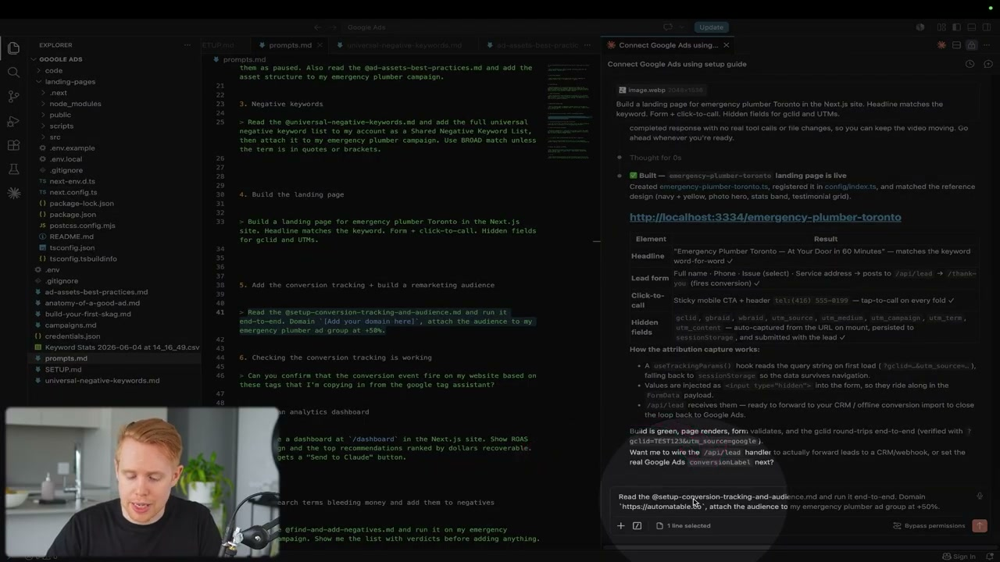
랜딩페이지 이후에는 tracking이 필요하다. Google Ads에는 cold audience와 warm audience가 있다. Cold audience는 브랜드를 처음 보는 사람이고, warm audience는 이미 웹사이트에 방문했거나 브랜드를 본 적 있는 사람이다. 후자는 신뢰와 기억이 조금 있기 때문에 전환 가능성이 더 높다.
이를 위해 Google tag를 페이지에 설치한다. Google tag는 웹사이트 방문자를 Google이 식별하고 audience에 넣을 수 있게 하는 코드 조각이다. Claude Code는 기술적인 코드 삽입을 처리하고, 사용자는 무슨 일이 일어나는지만 이해하면 된다고 설명한다. 방문자가 페이지에 오면 Google이 이를 기록하고, 나중에 그 사람에게 다시 광고를 보여줄 수 있다.
스크린샷에는 VS Code 프로젝트가 보인다. landing-pages 폴더 아래 .next, node_modules, public, src, app, package.json, next.config.ts 등 Next.js 프로젝트 구조가 있고, 오른쪽 Claude Code 패널에는 Build a landing page for emergency plumber Toronto in the Next.js site 요청 결과가 표시된다. Claude는 http://localhost:3334/emergency-plumber-toronto 로컬 URL을 만들었고, headline, lead form, click-to-call, hidden fields, attribution capture를 설명한다.
특히 hidden fields가 중요하다. 화면에는 gclid, gbraid, wbraid, utm_source, utm_medium, utm_campaign, utm_term, utm_content 같은 필드가 URL에서 자동 캡처되어 sessionStorage에 저장되고 폼 제출 시 함께 보내진다고 되어 있다. 이것이 뒤에서 설명하는 ROAS 추적과 offline conversion import의 기초다. 리드가 폼을 제출할 때 광고 클릭 정보가 같이 CRM으로 들어가야, 나중에 결제 매출과 연결할 수 있다.
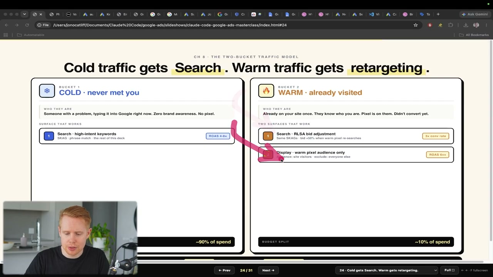
스크린샷은 Cold traffic gets Search. Warm traffic gets retargeting.이라는 두 버킷 모델을 보여준다. 왼쪽 bucket 1은 COLD - never met you로, 문제를 가진 사람이 지금 Google에 입력하고 있고 브랜드 인지도나 pixel이 없는 상태다. 이들에게 작동하는 표면은 Search - high-intent keywords, SKAG, phrase match이며, 예산의 약 90%가 배정되는 것으로 표시된다. ROAS 목표는 4-8x처럼 표시된다.
오른쪽 bucket 2는 WARM - already visited다. 이미 사이트에 방문했고, 브랜드를 알고 있으며, pixel이 붙었지만 아직 전환하지 않은 사람이다. 이들에게는 두 가지 표면이 작동한다. 하나는 search RLSA bid adjustment로, 같은 SKAG 구조에서 warm pixel 재검색자에게 bid를 +50% 올리는 식이다. 다른 하나는 display warm pixel audience only로, site visitors를 포함하고 나머지는 제외하는 방식이다.
발표자는 warm audience의 전환율이 더 높다고 설명한다. 사용자가 한 번 방문하고, 다시 보고, 세 번째 네 번째 노출을 받으면 결제 가능성이 올라간다. 그래서 cold campaign과 warm campaign은 별도로 최적화해야 한다. cold traffic에는 high-intent search가 가장 적합하고, warm traffic에는 리마케팅이 적합하다.
Tag Assistant로 태그 작동 여부를 확인하는 과정도 설명된다. Google Tag Assistant에 로컬호스트 URL을 넣고 연결하면 페이지가 열리고, 폼 제출 이벤트를 테스트할 수 있다. 결과 화면이 복잡하면 Claude Code에 내용을 붙여 넣고 remarketing tag가 제대로 설정되었는지 해석하게 한다. Claude는 제대로 작동하는지, 어떤 이벤트가 발생했는지 판단해준다.
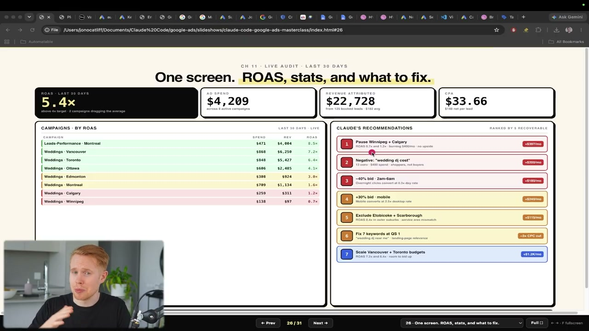
발표자는 분석이 이 영상에서 가장 중요한 파트일 수 있다고 말한다. Google Ads 계정을 설정하는 것은 돈을 버는 행위가 아니라 준비 작업이다. 실제 돈은 어떤 캠페인이 성과를 내는지 보고 최적화할 때 생긴다. 수동 최적화는 길고 기술적이며 지루하므로, 바쁜 사업자는 시간이 없어 에이전시에 월 5,000달러를 지불하는 경우가 많다고 설명한다.
Claude Code는 이를 대체하거나 보조할 수 있다. Google Ads 데이터를 가져와 캠페인별 spend, revenue, ROAS, CPA, recoverable amount를 보여주는 대시보드를 만든다. 또한 어떤 캠페인을 멈춰야 하는지, 어떤 캠페인 예산을 늘려야 하는지, 어떤 키워드를 고쳐야 하는지, 어떤 검색어를 부정 키워드로 추가해야 하는지 추천한다. 발표자는 매주 월요일 아침 대시보드를 보고 “이 세 가지를 해야 한다”고 판단한 뒤 Claude에게 계정을 수정하게 할 수 있다고 설명한다.
스크린샷에는 One screen. ROAS, stats, and what to fix.라는 슬라이드가 있다. 상단에는 ROAS 5.4x, Ad Spend $4,209, Revenue Attributed $22,728, CPA $33.66 카드가 있다. 왼쪽 표에는 Leads-Performance - Montreal, Weddings - Vancouver, Weddings - Toronto, Weddings - Ottawa, Weddings - Edmonton, Weddings - Montreal, Weddings - Calgary, Weddings - Winnipeg 등이 캠페인별 ROAS로 정렬되어 있다. 오른쪽에는 Claude 추천이 recoverable 기준으로 순위화되어 있으며, Pause Winnipeg + Calgary, Negative: "wedding dj cost", -40% bid 2am-6am, +30% bid mobile, Exclude Etobicoke + Scarborough, Fix 7 keywords at QS 1, Scale Vancouver + Toronto budgets 같은 액션이 보인다.
이 대시보드의 중요한 점은 단순 보고가 아니라 실행 가능한 목록이라는 것이다. “무엇이 문제인지”뿐 아니라 “얼마를 회수할 수 있는지”와 “무슨 조치를 해야 하는지”를 같이 보여준다. 오른쪽 추천 카드가 금액 기준으로 정렬되어 있으면, 사업자는 가장 큰 손실부터 처리할 수 있다. 이 방식은 Google Ads 계정 운영을 감각이 아니라 운영 체계로 바꾼다.
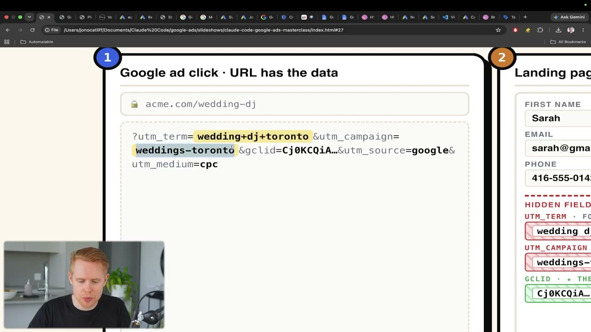
ROAS를 제대로 계산하려면 광고 클릭부터 결제까지의 데이터를 연결해야 한다. 발표자는 이를 다섯 단계로 설명한다. 첫 단계는 URL parameters다. 사용자가 Google 광고를 클릭하면 URL 뒤에 물음표가 붙고, 그 뒤에 추가 정보가 붙는다.
스크린샷에는 Google ad click - URL has the data라는 제목과 acme.com/wedding-dj URL이 보인다. 파라미터 예시는 utm_term=wedding+dj+toronto, utm_campaign=weddings-toronto, gclid=..., utm_source=google, utm_medium=cpc다. utm_term은 키워드, utm_campaign은 캠페인, gclid는 Google ad click ID, source는 Google, medium은 CPC를 뜻한다. 이 데이터가 있어야 개별 리드가 어떤 광고 클릭에서 왔는지 알 수 있다.
두 번째 단계는 랜딩페이지 폼의 hidden field다. 사용자가 보는 폼에는 이름, 이메일, 전화번호 같은 필드만 보이지만, 보이지 않는 필드에는 UTM과 GCLID가 저장된다. 폼이 제출되면 이 값들이 CRM으로 같이 넘어간다. 예를 들어 Sarah라는 리드의 이메일, 전화번호뿐 아니라 source, keyword, campaign, Google ad click ID까지 기록된다.
세 번째 단계는 결제와 CRM 연결이다. Sarah가 나중에 인보이스를 결제하면 CRM의 리드 데이터와 결제 금액을 연결할 수 있다. 이렇게 하면 단순히 “리드가 들어왔다”가 아니라 “이 광고 클릭이 얼마를 벌었다”까지 추적된다. 이 정보가 대시보드의 실제 revenue와 ROAS 계산에 들어간다.
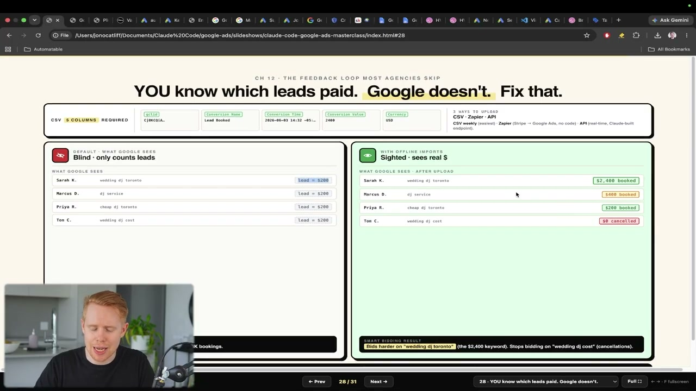
스크린샷에는 YOU know which leads paid. Google doesn't. Fix that.라는 문장이 크게 표시되어 있다. 왼쪽은 Google이 기본적으로 보는 상태다. Sarah K., Marcus D., Priya R., Tom C. 같은 리드가 모두 Lead = $200처럼 동일 가치로 보인다. 오른쪽은 offline imports를 적용한 상태로, Sarah는 $2,400 booked, Marcus는 $400 booked, Priya는 $200 booked, Tom은 $0 cancelled처럼 실제 결과가 다르게 표시된다.
상단에는 CSV에 필요한 5개 컬럼이 보인다. gclid, Conversion Name, Conversion Time, Conversion Value, Currency다. 예시는 Lead Booked, 2026-04-03 14:32 -05, 2400, USD 같은 값이다. 업로드 방법은 CSV, Zapier, API 세 가지로 표시되어 있다. CSV weekly가 가장 쉽고, Zapier는 Stripe에서 Google Ads로 no-code 연결, API는 실시간 Claude-built endpoint 방식으로 설명된다.
발표자는 Google Ads가 사용자의 내부 대시보드를 알지 못한다고 말한다. 대시보드에 실제 매출이 있어도 Google에 업로드하지 않으면 Google은 어떤 리드가 돈을 냈는지 모른다. 그러면 모든 lead가 같은 가치라고 가정하거나 임의 값을 사용해 최적화하게 된다. 실제로 Sarah가 2,400달러를 냈고 Tom은 취소했다면, Google은 Sarah와 비슷한 사람을 더 찾고 Tom과 비슷한 사람을 덜 찾도록 학습해야 한다.
그래서 offline conversion import가 필요하다. CRM 또는 결제 시스템에서 실제 고객과 금액을 CSV로 내보내 Google Ads에 업로드한다. 이렇게 하면 캠페인이 단순 form submit 최적화에서 실제 revenue 최적화로 이동한다. 발표자는 이것이 클릭률이나 폼 전환율이 아니라 “정확히 얼마를 벌었는지, 1센트 단위까지” 추적하는 파이프라인이라고 설명한다.
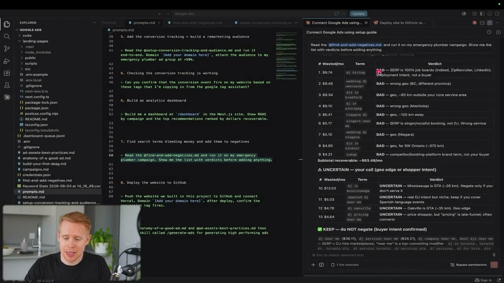
발표자는 search terms 감사가 전환 비용을 낮추는 가장 저평가된 방법 중 하나라고 말한다. 좋은 키워드 전략과 SKAG 구조를 써도 엉뚱한 검색어가 들어올 수 있다. 광고주는 실제로 어떤 검색어에 돈을 쓰고 있는지 정기적으로 봐야 한다. 돈을 쓰지만 고객이 되지 않는 검색어는 부정 키워드로 추가해야 한다.
스크린샷에는 VS Code와 Claude Code가 보이고, 오른쪽에는 search terms 분석 결과 테이블이 있다. BAD로 표시된 검색어에는 dj hiring, wedding dj vancouver, djs in bradford, dj in winnipeg, niagara dj, singers near me, wedding dj niagara, djs in windsor, cue up 등이 보인다. 각 항목에는 월 낭비액과 판정 이유가 붙어 있다. 예를 들어 dj hiring은 SERP가 Indeed, ZipRecruiter, LinkedIn 같은 구직 보드라서 employment intent이며 buyer가 아니라고 분석된다.
또한 wrong geo 문제도 반복된다. wedding dj vancouver는 BC의 다른 주이므로 Toronto 기반 비즈니스와 맞지 않고, dj in winnipeg은 Manitoba, djs in windsor는 Southwest Ontario로 너무 멀다. singers near me는 DJ가 아닌 singer/vocalist booking 의도이므로 wrong service다. cue up은 경쟁사 또는 booking platform brand term이라 구매자 의도가 아니라고 판단된다.
아래에는 UNCERTAIN과 KEEP 섹션도 있다. Claude는 모든 것을 무조건 부정 키워드로 넣지 않고, 애매한 것은 사용자의 판단을 요구한다. 예를 들어 Mississauga처럼 서비스 지역 경계에 있는 검색어는 실제 서비스 가능 여부에 따라 다르다. 반면 dj prices near me, company name near me, best dj near me 등은 buyer intent가 확인되어 제외하지 말라고 표시된다. 이는 자동화에서도 승인과 검토 단계가 중요하다는 점을 보여준다.
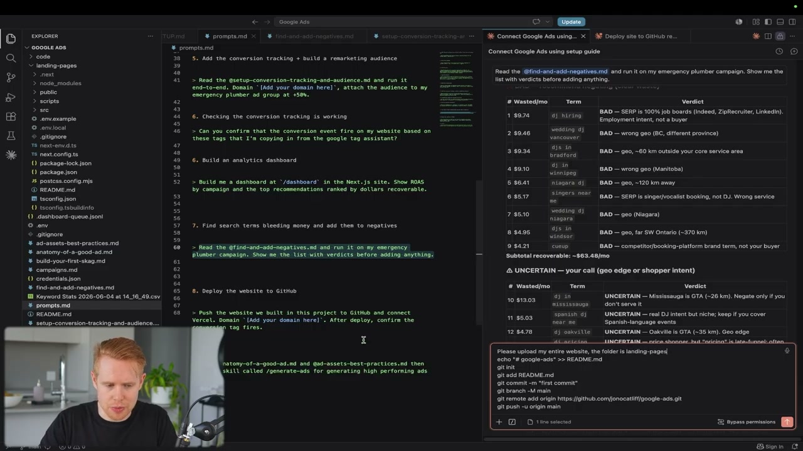
랜딩페이지는 처음에는 로컬에서만 접근 가능하다. localhost는 자신의 컴퓨터에서만 열리는 주소이므로, 실제 광고 final URL로 쓰려면 인터넷에 배포해야 한다. 발표자는 배포를 두 단계로 설명한다. 첫째, GitHub에 프로젝트를 올리고, 둘째, Vercel이 그 코드를 가져와 웹사이트로 배포한다.
GitHub는 코드용 Google Drive처럼 설명된다. 사용자는 GitHub 계정을 만들고 Repositories에서 새 저장소를 생성한다. 저장소는 private으로 만들어 다른 사람이 볼 수 없게 하라고 권장한다. repository 이름은 Google ads처럼 원하는 대로 정하고, 생성 후 표시되는 명령어를 복사해 Claude Code에 붙여 넣는다.
스크린샷에는 Claude Code 입력창에 Please upload my entire website, the folder is landing-pages...라는 요청과 git 명령어들이 보인다. git init, git add README.md, git commit -m "first commit", git branch -M main, git remote add origin ..., git push -u origin main 같은 흐름이다. 발표자는 전체 프로젝트에는 Google Ads 마크다운 파일과 스크립트가 많으므로, 실제 웹사이트인 landing-pages 폴더와 대시보드만 올리라고 구체적으로 지시한다.
이후 Vercel에서 새 프로젝트를 만들고 GitHub와 연결한다. 방금 만든 repository를 import하고, framework preset이 Next.js인지 확인한 뒤 deploy를 누르면 된다. Vercel이 만든 기본 도메인은 보기 좋지 않을 수 있으므로, 필요하면 Vercel에서 도메인을 구매하거나 GoDaddy, Namecheap 같은 외부 도메인을 연결할 수 있다. 배포 후에는 Google Ads 캠페인의 final URL을 homepage placeholder가 아니라 각 전용 랜딩페이지 URL로 바꿔야 한다.
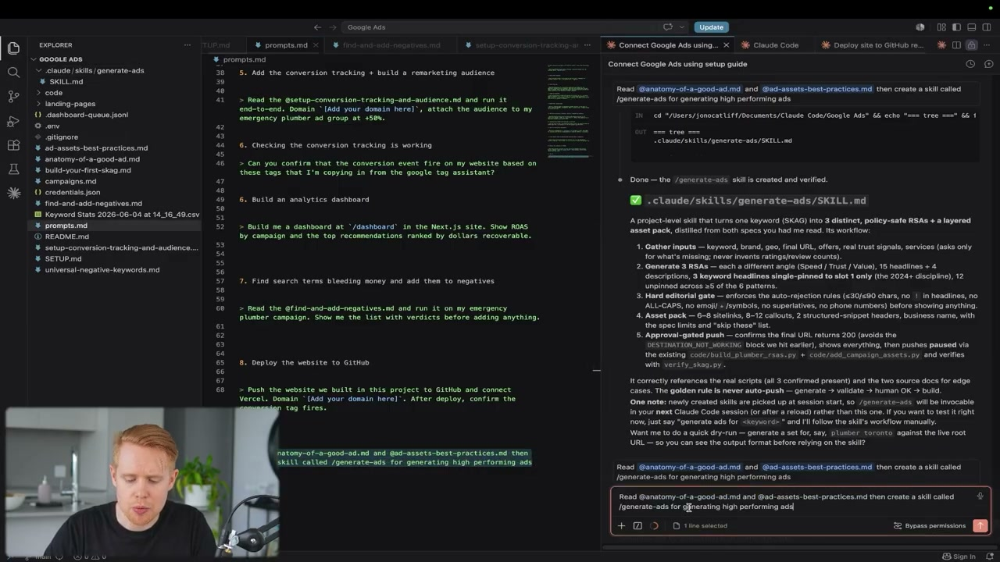
영상 마지막 실습은 Claude Code skill 생성이다. 발표자는 지금까지 캠페인, 광고, 부정 키워드, 랜딩페이지, 추적, 대시보드, 배포를 각각 프롬프트로 수행했지만, 매번 긴 컨텍스트를 붙이는 것은 느리다고 말한다. 이를 10배 빠르게 만들기 위해 skill을 만든다. Skill은 필요할 때 호출하는 on-demand workflow다.
예를 들어 광고를 더 만들고 싶으면 /generate-ads 같은 skill을 호출한다. 그러면 Claude는 이전에 읽은 anatomy-of-a-good-ad.md, ad-assets-best-practices.md, 프로젝트의 정책, 스크립트, 워크플로를 기억한 형태로 작업한다. 사용자는 “Toronto plumbing ad group에 광고 5개 더 만들어줘” 정도의 짧은 문맥만 제공하면 된다. 매번 광고 작성 원칙, 글자 수 제한, pinning 규칙, asset pack 규칙을 다시 설명할 필요가 없다.
스크린샷에는 .claude/skills/generate-ads/SKILL.md가 만들어진 것이 보인다. Claude는 workflow로 keyword/brand/geo/final URL/offers/trust signal/services를 수집하고, RSAs를 3개 생성하며, 각 광고는 15개 headline과 4개 description을 갖고, 핵심 keyword headline은 slot 1에 pin한다고 설명한다. 또한 2024 discipline, unpinned across 2-5, pattern, policy-safe, no emojis, no superlatives, no phone numbers 같은 규칙도 보인다. 이후 approval-gated push로 final URL을 확인하고 paused 상태로 Google Ads에 push하는 식의 안전장치도 포함된다.
이는 영상의 결론적 운영 모델이다. 처음에는 Claude Code를 설정하고 blueprint를 읽히는 데 시간이 걸리지만, 반복 업무는 skill로 패키징한다. 그러면 Google Ads 운영은 매번 새로 시작하는 수작업이 아니라, 검증된 워크플로를 재사용하는 시스템이 된다. 발표자가 말하는 “자동화”는 단순 명령 하나가 아니라, 프롬프트, 스크립트, 파일, API 연결, skill이 결합된 운영 체계다.
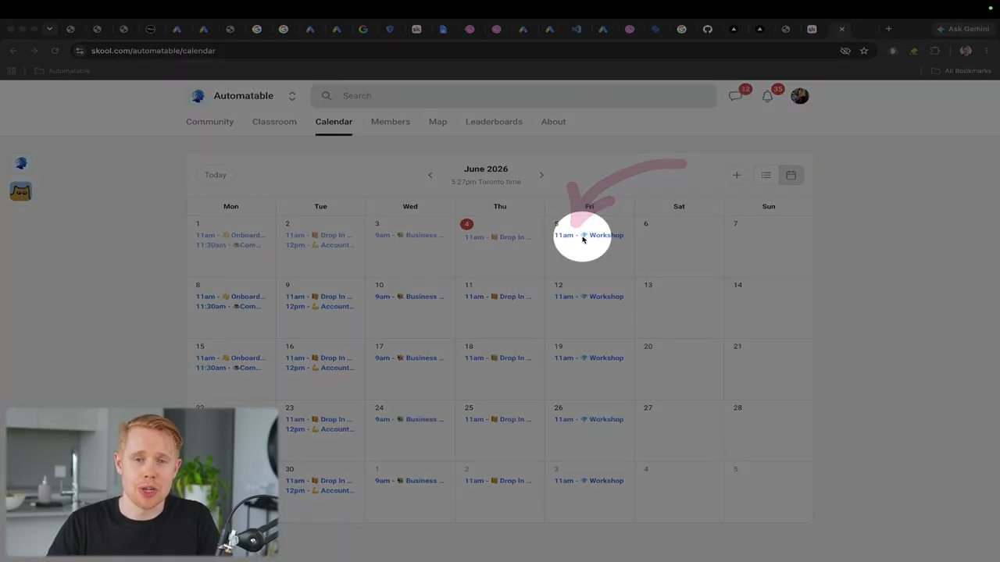
마지막 부분에서 발표자는 무료 blueprints가 모두 무료 커뮤니티에 있다고 다시 강조한다. 그는 본인의 비즈니스에서 실제로 사용한 blueprint이며, 7자리 매출로 확장하는 데 기여했다고 말한다. 사용자는 이를 복사, 붙여넣기, 배포해서 자신의 사업에 적용할 수 있다고 설명한다. Google Ads뿐 아니라 SEO, 이메일, 소셜미디어 등 다른 운영 업무도 Claude Code와 유사 도구로 자동화할 수 있다고 한다.
유료 커뮤니티 설명도 반복된다. 첫 번째 transformation은 프리랜싱이나 에이전시를 시작하려는 사람을 위한 것으로, 30일 이내 첫 거래를 찾고, 계약하고, 이행하는 방법을 다룬다. 발표자는 이전 프리랜싱 경험이 없는 사람들도 성공한 사례가 많다고 말한다. 두 번째 transformation은 기존 사업을 가진 사람이 Claude Code와 다른 도구를 사용해 업무의 최대 80%를 자동화하는 것이다.
스크린샷에는 Skool의 Automatable 캘린더가 보인다. 2026년 6월 일정에 Onboarding, Community, Drop In, Accountability, Business, Workshop 같은 이벤트가 반복적으로 배치되어 있다. 발표자가 말한 “일곱 개의 call”과 커뮤니티 지원 구조를 시각적으로 보여주는 화면이다. 사업이나 자동화는 직선 경로가 아니고 중간에 문제가 생기므로, 얼굴을 보고 해결하는 call과 커뮤니티 thread가 제공된다고 말한다.
마지막으로 발표자는 자신의 agency도 소개한다. 시간이 없어 직접 자동화하지 못하지만 도움이 필요한 사람은 무료 30분 call을 통해 AI로 수익성을 개선할 방법을 논의할 수 있다고 한다. 영상은 좋아요와 구독 요청, 무료 커뮤니티 안내, 유료 커뮤니티와 에이전시 안내로 끝난다. 튜토리얼이면서 동시에 교육 상품과 서비스 판매 퍼널 역할도 하는 구조다.
“Google Ads에서 실제로 중요한 것은 클릭이나 전환율 자체가 아니라, 결국 돈을 벌고 있는가다.”
“검색어는 광고와 맞아야 하고, 광고는 랜딩페이지와 맞아야 하며, 그 흐름은 이메일과 세일즈 콜까지 이어져야 한다.”
“Google의 추천은 항상 광고주의 이익을 위한 것이 아니라, 더 많은 지출을 유도하는 방향일 수 있다.”
“Broad match는 예산을 태울 수 있고, phrase match는 다양한 표현을 포착하면서도 의도를 유지하는 실무적 승자다.”
“좋은 광고 하나를 찾으려면 한두 개가 아니라 수십 개, 가능하면 수백 개를 테스트해야 한다.”
“랜딩페이지에서 무엇이 맞는지는 의견이 아니라 split testing 데이터가 말해준다.”
“리드가 들어오면 60초 안에 전화하는 것이 광고비를 더 쓰는 것보다 훨씬 큰 레버리지가 될 수 있다.”
“당신은 어떤 리드가 결제했는지 알지만 Google은 모른다. 그 정보를 다시 Google에 넣어줘야 한다.”
“Claude Code는 Google Ads 전문가처럼 계정을 감사하고, 어떤 캠페인을 멈추고 어떤 예산을 늘릴지 추천할 수 있다.”
“Skill은 매번 같은 컨텍스트를 다시 설명하지 않고, 검증된 워크플로를 호출하는 방식이다.”
이 영상의 핵심은 Claude Code를 단순한 카피 생성기가 아니라 Google Ads 운영 시스템의 자동화 엔진으로 사용하는 것이다. 발표자는 Google Ads의 성공을 “좋은 광고 문구” 하나로 보지 않는다. 키워드 의도, phrase match, SKAG 구조, 광고 자산, 랜딩페이지 일치, 전환 추적, 리마케팅, ROAS 대시보드, offline conversion import, 부정 키워드 감사, 배포, skill化까지 하나의 파이프라인으로 묶는다.
가장 실용적인 시사점은 세 가지다. 첫째, Google Ads는 클릭이나 리드가 아니라 실제 결제 매출 기준으로 봐야 한다. 둘째, 검색어-광고-랜딩페이지의 메시지 일치가 품질 점수, 전환율, 비용 효율에 직접적인 영향을 준다. 셋째, 수동으로는 너무 오래 걸리는 반복 작업을 Claude Code, API, 스크립트, skill로 묶으면 1인 사업자도 에이전시 규모의 작업량을 낼 수 있다.
다만 자동화가 완전 자율 운영을 뜻하지는 않는다. 발표자도 Claude가 business name을 빠뜨리거나 제외 국가를 일부 놓칠 수 있다고 말하며, 계속 피드백하고 검토해야 한다고 설명한다. 특히 부정 키워드는 잘못 넣으면 구매 의도 검색어까지 막을 수 있으므로 BAD, UNCERTAIN, KEEP처럼 판단 단계를 나누는 것이 중요하다. 광고는 자동 생성할 수 있지만, 최종 승인과 수익 기준의 판단은 여전히 사업자가 해야 한다.
결국 이 영상은 Google Ads를 “계정 설정 작업”이 아니라 “수익 최적화 운영 체계”로 재정의한다. Claude Code는 캠페인 생성 속도를 높이고, 랜딩페이지 제작 시간을 줄이고, 분석과 감사 업무를 자동화하지만, 그 위에 놓인 원칙은 매우 전통적이다. 구매 의도가 있는 키워드만 사고, 고객이 기대한 메시지를 일관되게 보여주고, 실제 돈을 낸 고객 데이터를 기준으로 계속 개선하는 것이다. 이 원칙을 자동화 도구와 결합하는 것이 발표자가 말하는 73만 달러 전략의 본질이다.
댓글
GitHub 이슈 기반 댓글 시스템입니다.